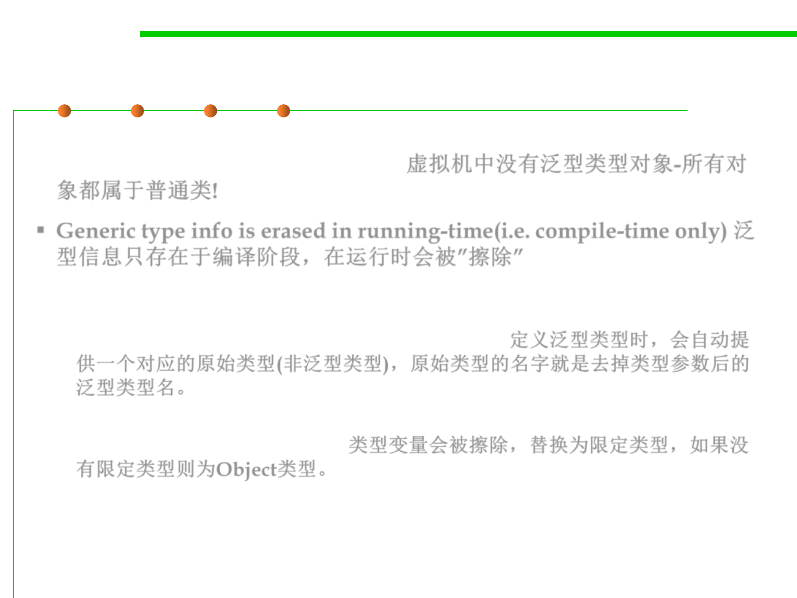

Type Erasure
5.2 Construction for Reuse
▪ The virtual machine does not have objects of generic types—all
objects belong to ordinary classes. 虚拟机中没有泛型类型对象-所有对
象都属于普通类!
▪ Generic type info is erased in running-time(i.e. compile-time only) 泛
型信息只存在于编译阶段，在运行时会被”擦除”
– Whenever you define a generic type, a corresponding raw type is
automatically provided. The name of the raw type is simply the name of the
generic type, with the type parameters removed. 定义泛型类型时，会自动提
供一个对应的原始类型(非泛型类型)，原始类型的名字就是去掉类型参数后的
泛型类型名。
– The type variables are erased and replaced by their bounding types (or Object
for variables without bounds) 类型变量会被擦除，替换为限定类型，如果没
有限定类型则为Object类型。